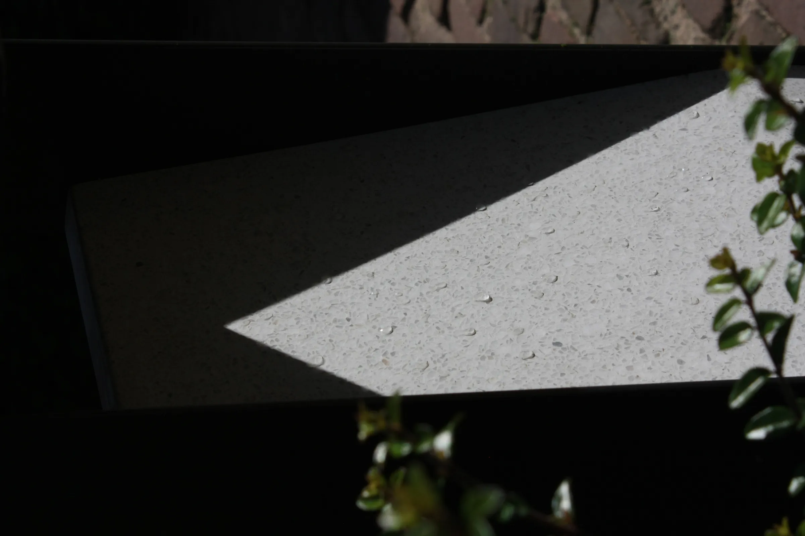
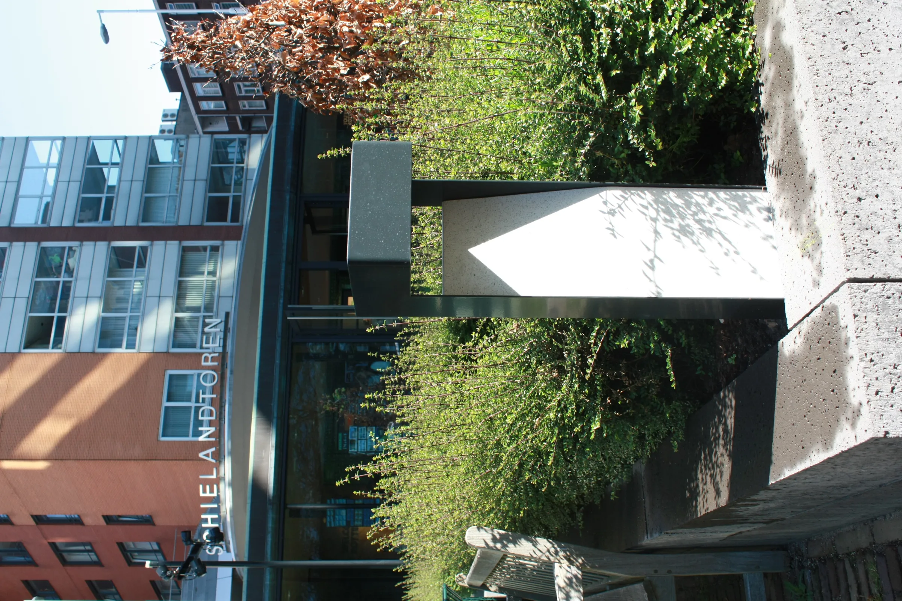

Energie
zongeen netaansluiting
Reflector
terrazzowit carrara
Afwerking
RVSpoedercoat
Plaats
RotterdamSchielandhuis
In de tuin van het Schielandhuis in Rotterdam staan Solarbolders langs de paden en bij de entree. Ze werken zonder kabel: het zonnepaneel zit in het bovenvlak, de reflector is van wit carrara-terrazzo en de behuizing van gepoedercoat roestvast staal.
Het ontwerp is van Iris Dijkstra (Atelier LEK); De Licht Fabriek heeft het samen met Atelier LEK uitgewerkt tot een in Nederland geproduceerd armatuur.
Wat is toegepast
- Solarbolders, offgrid: alleen zon en daglicht nodig.
- Reflector in wit carrara-terrazzo, behuizing in RVS met poedercoat.
- Zonnepaneel in het bovenvlak van de bolder.





Contact
Een vergelijkbare plek?
Vertel kort om welke locatie het gaat en wat er nu hangt of staat. We denken mee over wat er past.
Liever bellen? 06 28553641